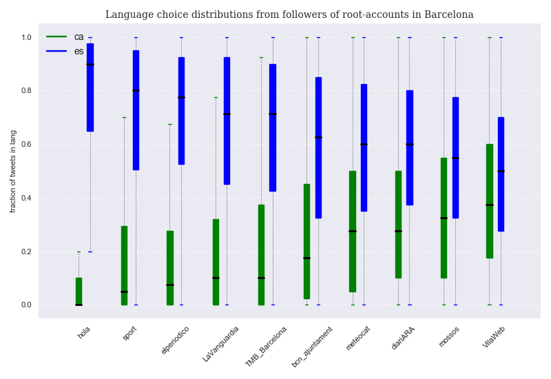

Language choice distribution of followers per account¶
Language percentages give us a general idea of language preference, but we have not explored yet how this preference is distributed among users. Do most followers (re)tweet in both languages for all accounts? What proportion of users tweet in only or mostly one language for each account?
Since we have 40 classified tweets per selected follower, we can compute the ratio of tweets in each language per follower. After sorting all user ratios per language and per account, we can visualize box plots of the data. Box plots are a great way to quickly visualize distributions. In a box plot, data is divided into 4 groups by its 3 quartiles. Each box contains 50% of the data as determined by the first and the third quartiles, and is divided in two parts by the median of the sorted data (the middle point from lower to higher value, and also its second quartile). The interval defined by the upper and lower wiskers contains almost all of the data, except for those values that are considered statistical outliers. We plot two box plots per account: one for Catalan ratios, another for Spanish ones ( English is not considered here ).

The first thing we should point out is how the median values (black line inside boxes) are mostly far away from a balanced result ( 0.5 ) for most accounts, but especially for those that tweet in Spanish ( the leftmost four ). For these accounts, the distributions are very skewed, showing a relatively large number of users that tweet only or almost only in Spanish. Only in the case of @VilaWeb followers, a more even distribution for both languages is found. As a consequence, while the median follower of @hola does not tweet in Catalan at all, and that of @sport only 5% of the times, the median follower of @VilaWeb tweets almost 40% of the times in Catalan. It is interesting to notice that while users that tweet only or almost only in Catalan are non existent or considered outliers for the accounts that tweet in Spanish, users that tweet only or almost only in Spanish are not outliers for any of the accounts under consideration. In any case, all median followers (re)tweet more often in Spanish than in Catalan. In addition, they do so by very consistent margins, since all median followers (re)tweet more than half of the times in Spanish, even in the case of @VilaWeb.
In the case of each of the four accounts whose tweets are in Spanish, 75% of their followers write more than 50% of their tweets in Spanish. On the other hand, for these very accounts, 75% of their followers write less than 30% of their tweets in Catalan.